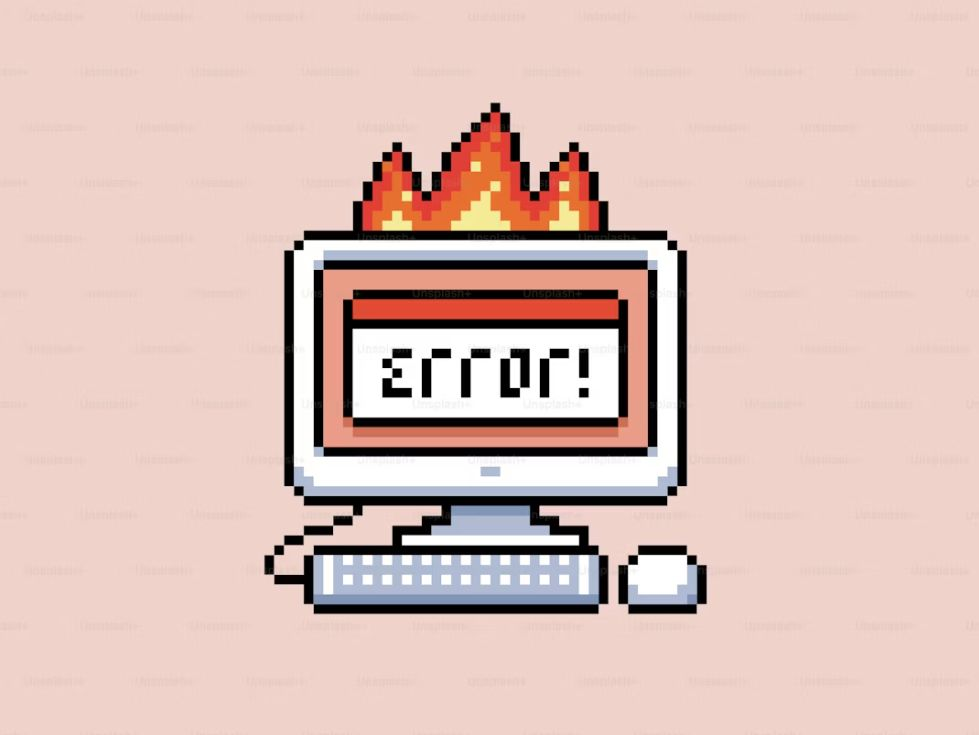
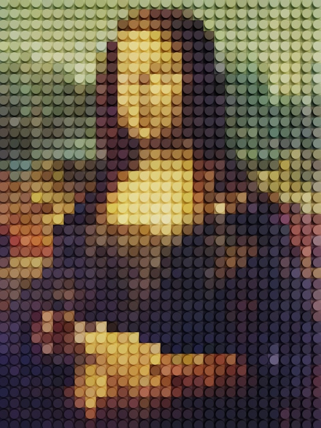
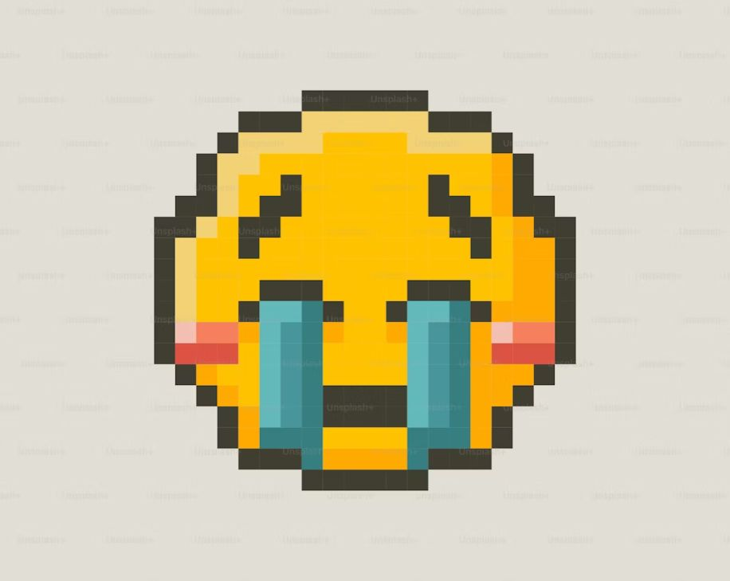
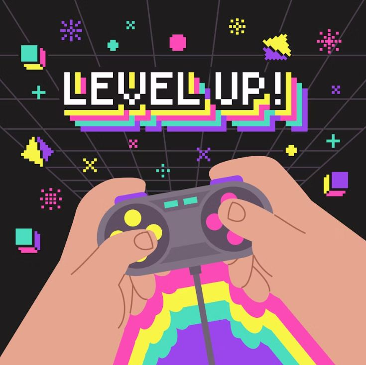

Это было самое начало пути. На этом этапе важно было проникнуться
основами и настроиться на учёбу. И, возможно, подумать, как новые
знания могут повлиять на ваше будущее.
Главное - начинать этот этап с полной уверенностью в том, что все обязательно получится. Если приложить
достаточно усилий.
1 спринт: Я — чистый лист
<Много неуверенности>
На первых этапах мы работали со страхами и сомнениями, которые
часто испытывают новички. Один из них — страх перед чистым листом.
Это, конечно же, намного сложнее, чем боязнь куска бумаги. Часто
за этим ощущением скрываются более глубокие вопросы: с чего
начать? а вдруг будет слишком сложно? что, если я не справлюсь?
Не стоит пугаться нового. Всё новое - возможность сделать себя лучше.
1 спринт: А если не получится?

<Первая победа>
Первый проект — позади! Но это всё ещё самое начало пути. Радость
могла быстро померкнуть и смениться ожиданием провала. Или вы,
наоборот, могли вдохновиться успехами и поверить в себя.
В моменты трудностей главное - верить, что нет непреодолимых преград. Всё только в твоих руках.
2 спринт: Погоня за идеалом

<Бесконечность - не предел>
На этом этапе вы уже достаточно разбирались в основах вёрстки,
чтобы понять, как много ещё впереди. Вы могли попытаться погнаться
за идеалом и понять, что он недостижим. А, может, вы вовсе и не
подвержены перфекционизму и вместо того, чтобы сделать идеально,
старались просто сделать.
Идеал у каждого свой, и к нему нужно стремиться. Этот путь длиною в жизнь, но идти по нему каждый будет
своей дорогой.
2 спринт: О тех, кто рядом
<Близкие люди>
Всё это время вы были не одиноки (хотя, возможно, иногда и
чувствовали, что одни против целого мира). Вас окружали
одногруппники, команда сопровождения и просто близкие люди,
которым можно пожаловаться, если очередной макет просто так не
поддавался. Осваивать что-то новое легче, когда рядом есть
единомышленники, не правда ли?
Поэтому, где бы ты не оказался, всегда нужно находить тех отзывчивых людей, которые помогут и выслушают. И
быть готовым сделать то же самое.
3 спринт: Обходные стратегии
<Головоломка>
На этом курсе вы постоянно решали разные задачи. В какой-то момент
вам могло показаться, что решения просто иссякли. Значит, пришло
время посмотреть на задачу под другим углом.
Ведь любую задачу можно решить множеством способов. Понимая это, осознаешь, что твое обучение только
началось.
3 спринт: Когда опускаются руки

<Отдых и вдохновение>
Во время учёбы часто возникает чувство, когда не знаешь, за что
хвататься. Вроде и проектную пора сдавать, и задачи хочется
порешать, и в теории получше разобраться, и жизнь не забыть
пожить. В такие моменты очень нужна концентрация. Вспомните,
откуда вы её черпали.
Здесь самое главное - умело распределять время, не забывать про отдых. Проводите свой отдых так, чтобы он
стал источником вашего вдохновения.
«Сейчас я здесь»

<Только вперед!>
Сейчас вы уже очень много знаете о вёрстке. Но это только начало.
Во-первых, впереди ещё много материала про «красотищу». Во-вторых,
с окончанием курса учёба не заканчивается. Вёрстка — это целый
мир. И этот мир постоянно меняется. Познать его полностью не
получится, но это тот случай, когда важен сам процесс познания.
Ведь часто путь — и есть результат.
Действительно, пройдя эту часть пути, начинаешь чувствовать себя уверенее. И уже видишь свои слабые и
сильные стороны. Это помогает понять, над чем ещё стоит рабоать.